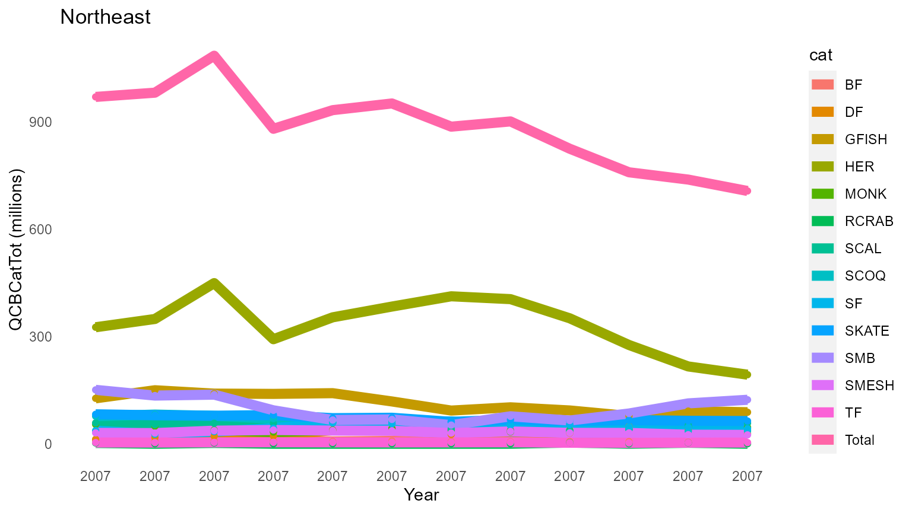

vignettes/NEFSC-Fishery.Rmd
NEFSC-Fishery.Rmd
PKG <- c(# devtools::install_github("emilymarkowitz-NOAA/FishEconProdOutput", force = TRUE)
"FishEconProdOutput",
#Seperating species by taxonomic group
"taxize", # install.packages("remotes"); remotes::install_github("ropensci/taxize")
# Data Managment
"tidyverse",
"filesstrings",
"data.table",
"plyr",
"dplyr",
"rlist",
# #RMarkdown
"rmarkdown",
"ggpubr",
"kableExtra",
#Excel File Management
"xlsx",
"readxl"
)
for (p in PKG) {
if(!require(p,character.only = TRUE)) {
install.packages(p, repos = "http://cran.us.r-project.org")
require(p,character.only = TRUE)}
}
# Folder name for output
folder<-"Northeast"
titleadd = paste0(minyr, "To", maxyr, "_NorE")
counter<-0
dir_in<-getwd()
if (TF) {
#Local Directories
dir_outputtables<-paste0(dir_in, "/output/")
dir.create(dir_outputtables)
# Define Directories
dir_analyses = paste0(dir_outputtables, folder)
dir.create(dir_analyses)
} else {
dir_analyses<-dir_outputtables<-dir_in
}
counter<-0
landings_data<-FishEconProdOutput::land
landings_data<-landings_data[landings_data$Region %in% c("New England", "Mid-Atlantic"),]
landings_data$Region<-"Northeast"
# so you can see what this data looks like
knitr::kable(head(landings_data), booktabs = T) %>%
kable_styling(latex_options = "striped")| Year | Pounds | Dollars | category | Tsn | State | Region | abbvreg | |
|---|---|---|---|---|---|---|---|---|
| 14 | 2005 | 15 | 30 | Shellfish | 83677 | Maryland | Northeast | MA |
| 15 | 2004 | 3 | 2 | Shellfish | 83677 | New Jersey | Northeast | MA |
| 16 | 2006 | 37 | 28 | Shellfish | 83677 | New Jersey | Northeast | MA |
| 17 | 2004 | 611 | 393 | Shellfish | 83677 | New York | Northeast | MA |
| 18 | 2005 | 1268 | 1154 | Shellfish | 83677 | New York | Northeast | MA |
| 19 | 2005 | 14183 | 6323 | Shellfish | 83677 | Maine | Northeast | NE |
| code | plan | name |
|---|---|---|
| 23 | BF | Bluefish |
| 352 | DF | Spiny Dogfish |
| 81 | GFISH | Atlantic Cod |
| 120 | GFISH | Winter Flounder |
| 122 | GFISH | Witch Flounder |
| 123 | GFISH | Yellowtail Flounder |
| 124 | GFISH | American Plaice Flounder |
| 125 | GFISH | Sand Dab Flounder |
| 147 | GFISH | Atlantic Haddock |
| 153 | GFISH | White Hake |
| 159 | GFISH | Atlantic Halibut |
| 240 | GFISH | Redfish |
| 250 | GFISH | Ocean Pout |
| 269 | GFISH | Pollock |
| 512 | GFISH | Wolffish |
| 168 | HER | Atlantic Herring |
| 12 | MONK | Monkfish |
| 710 | RCRAB | Red Crab |
| 800 | SCAL | Sea Scallop |
| 754 | SCOQ | Ocean Quahog |
| 769 | SCOQ | Surf clam |
| 121 | SF | Summer Flounder |
| 329 | SF | Scup |
| 335 | SF | Black Sea Bass |
| 364 | SKATE | Rosette Skate |
| 365 | SKATE | Skates |
| 366 | SKATE | Little Skate |
| 367 | SKATE | Winter Skate |
| 368 | SKATE | Barndoor Skate |
| 369 | SKATE | Smooth Skate |
| 370 | SKATE | Thorny Skate |
| 372 | SKATE | Clearnose Skate |
| 51 | SMB | Butterfish |
| 212 | SMB | Atlantic Mackerel |
| 801 | SMB | Loligo Squid |
| 802 | SMB | Illex Squid |
| 152 | SMESH | Red Hake |
| 508 | SMESH | Offshore Hake |
| 509 | SMESH | Silver Hake |
| 444 | TF | Blueline Tilefish |
| 446 | TF | Golden Tilefish |
itis_reclassify() to categorize all of the speciesFind TSN values for species of interest with itis.gov
# Find TSN values for species of interest
spcat.list<-list('Bluefish' = 168559, # Species Pomatomus saltatrix (Linnaeus, 1766) – bluefish, anjova
'Spiny dogfish' = 160617, #Species Squalus acanthias Linnaeus, 1758 – cazón espinoso común, piked dogfish, spiny dogfish, galludo espinoso, aiguillat commun, dogfish, grayfish, spurdog
'Atlantic Cod' = 164712, # Species Gadus morhua Linnaeus, 1758 – morue de l'Atlantique, bacalao del Atlántico, cod, rock cod, morue franche, Atlantic cod
'Summer flounder' = 172735, #Species Paralichthys dentatus (Linnaeus, 1766) – summer flounder, fluke, cardeau d'été, Summer Flounder
'Winter Flounder' = 172905, # Species Pseudopleuronectes americanus (Walbaum, 1792) – plie rouge, blackback, Georges Bank flounder, lemon sole, rough flounder, winter flounder, Winter Flounder
'Witch Flounder' = 172873, #Species Glyptocephalus cynoglossus (Linnaeus, 1758) – witch flounder, gray sole, plie grise, Witch Flounder
'Yellowtail Flounder' = 172909, #Species Limanda ferruginea (Storer, 1839) – limande à queue jaune, rusty flounder, yellowtail flounder, Yellowtail Flounder
'American Plaice Flounder' = 172877, # Species Hippoglossoides platessoides (Fabricius, 1780) – American plaice, plie canadienne, American dab, Canadian plaice, dab, American Plaice
'Sand Dab Flounder' = 172746, #Species Scophthalmus aquosus (Mitchill, 1815) – windowpane, brill, sand dab, spotted flounder, turbot de sable, Windowpane
'Atlantic haddock' = 164744, # Species Melanogrammus aeglefinus (Linnaeus, 1758) – haddock, aiglefin
'White hake' = 164732, # Species Urophycis tenuis (Mitchill, 1814) – white hake, mud hake, merluche blanche
'Red hake' = c(164730 # Species Urophycis chuss (Walbaum, 1792) – red hake, squirrel hake, merluche-écureuil
),#164729), # Genus Urophycis Gill, 1863 – codlings # Toledo, includes other hake
'Silver hake' = c(164791 #Species Merluccius bilinearis (Mitchill, 1814) – silver hake, merlu argenté
), # 164790), # Genus Merluccius Rafinesque, 1810 – hakes # Toledo, includes other hake
'Skates' = 160845, # Family Rajidae Blainville, 1816 – rayas, rays, skates, raies
"Rosette skate" = 564136,# Species Leucoraja garmani (Whitley, 1939) – rosette skate
'Little Skate' = 564130,#Species Leucoraja erinacea (Mitchill, 1825) – raie-hérisson, common skate, little skate, summer skate
'Winter Skate' = 564145,#Species Leucoraja ocellata (Mitchill, 1815) – raie tachetée, big skate, eyed skate, winter skate
'Barndoor Skate' = 564139,#Species Dipturus laevis (Mitchill, 1818) – grande raie, barndoor skate
'Smooth Skate' = 564151,# Species Malacoraja senta (Garman, 1885) – raie à queue de velours, smooth skate
'Thorny Skate' = 564149,#Species Amblyraja radiata (Donovan, 1808) – raie épineuse, starry skate, thorny skate
'Clearnose Skate' = 160855,#Species Raja eglanteria Bosc in Lacepède, 1800 – raya naricita, clearnose skate
'Loligo squid' = 82370, # Genus Loligo Lamarck, 1798
'Illex Squid' = 82520, # Genus Illex Steenstrup, 1880
'Ocean pout' = 630979, # Species Zoarces americanus (Bloch and Schneider, 1801) – ocean pout, loquette d'Amérique
'Atlantic mackerel' = 172414, #Species Scomber scombrus Linnaeus, 1758 – caballa del Atlántico, maquereau commun, maquereau bleu, Atlantic mackerel
'Atlantic pollock' = 164727, #Species Pollachius virens (Linnaeus, 1758) – pollock, coalfish, carbonero, lieu noir, saithe, goberge
'Atlantic Wolffish' = 171336, # Genus Anarhichas Linnaeus, 1758 – Atlantic wolffishes
'Black sea bass' = 167687, # Species Centropristis striata (Linnaeus, 1758) – black sea bass
'Scups' = 169181, # Genus Stenotomus Gill, 1865
'Butterfish' = 172567, # Species Peprilus triacanthus (Peck, 1804) – palometa estrecha, butterfish, stromatée à fossettes
'Blueline Tilefish' = 168543, # Species Caulolatilus microps Goode and Bean, 1878 – blueline tilefish, blanquillo lucio
'Golden Tilefish' = 168546, # Species Lopholatilus chamaeleonticeps Goode and Bean, 1879 – blue tilefish, tilefish, conejo amarillo
'Monkfish' = 164499 , #Species Lophius americanus Valenciennes in Cuvier and Valenciennes, 1837 – goosefish, monkfish, baudroie d'Amérique
'Acadian Redfish' = 166774, # Species Sebastes fasciatus Storer, 1854 – Acadian redfish, Labrador redfish, Acadian rockfish, sébaste acadien
'Atlantic Herring' = 161722, # Species Clupea harengus Linnaeus, 1758 – Baltic herring, herring, hareng atlantique, Atlantic herring
'Atlantic surf clam' = 80944, #Species Spisula solidissima (Dillwyn, 1817) – Atlantic surfclam
'Offshore Hake' = 164793, # Species Merluccius albidus (Mitchill, 1818) – offshore hake, offshore whiting
'Ocean quahog clam' = 81343, # Species Arctica islandica (Linnaeus, 1767) – ocean quahog
'Red Crab' = 620992, # Species Chaceon quinquedens (S. I. Smith, 1879) – red deepsea crab
'Sea scallop' = 79718, #Species Placopecten magellanicus (Gmelin, 1791) – sea scallop
'Atlantic halibut' = 172933 # Species Hippoglossus hippoglossus (Linnaeus, 1758) – Atlantic halibut, flétan atlantique, Atlantic Halibut
)Match/merge the codes in your above list to the species listed in the fisheries list
# a bit hacky, but I am linking all of the TSN numbers to their respective species here in the northeast fisheries list
spcat<-c()
for (i in 1:nrow(ne_spp)) {
spcat<-c(spcat,
ifelse(sum(grepl(pattern = ne_spp$name[i], x = names(spcat.list) , ignore.case = T)) == 0,
NA, grep(pattern = ne_spp$name[i], x = names(spcat.list), ignore.case = T) ))
}
ne_spp$TSN<-as.numeric(unlist(spcat.list[spcat]))
# Now convert the Northeast Fisheires list into a list for the itis_reclassify function
categories<-list()
for (i in 1:length(unique(ne_spp$plan))) {
categories[i]<-list(ne_spp$TSN[ne_spp$plan %in% unique(ne_spp$plan)[i]])
names(categories)[i]<-unique(ne_spp$plan)[i]
}itis_reclassify() can take a minute!
# Use the itis_reclassify function to sort each species listed in the FOSS data into each classification group
temp<-itis_reclassify(tsn = unique(landings_data$Tsn),
categories = categories,
uncategorized_name="Uncategorized")
tsn_id<-temp$df_out
# Remove anything that wasn't classified (we don't them for what we are doing here)
if (sum(tsn_id$category %in% c("Other", "Uncategorized"))>0) {
tsn_id<-tsn_id[!(tsn_id$category %in% c("Other", "Uncategorized")),
c("TSN", "category")]
}
# renaming columns for joining other datasets to this dataset
landings_data<-dplyr::rename(landings_data,
TSN = Tsn)
tsn_id$TSN<-as.numeric(tsn_id$TSN)
# Join the FOSS landings data to their respctive categories
landings_data<-dplyr::left_join(x = landings_data,
y = tsn_id,
by = "TSN")
# Rename columns so they match what the funciton uses
landings_data<-dplyr::rename(landings_data,
Tsn = TSN,
category = category.y)
# Minor data editing.
landings_data<-landings_data[landings_data$Year>=minyr & landings_data$Year<=maxyr, # Only include years that you intend to assess.
c("Year","Pounds","Dollars","category","Tsn", "State", "Region", "abbvreg")] # These are all of the columns you need
# Sometimes negative numbers can be in these columns. They're flags and not real values, so we'll want to remove those here
landings_data<-landings_data[(landings_data$Pounds>=0), ]
landings_data<-landings_data[(landings_data$Dollars>=0), ]
# Print out the resultant table so we can see our hard work!
knitr::kable(head(landings_data), booktabs = T) %>%
kable_styling(latex_options = "striped")| Year | Pounds | Dollars | category | Tsn | State | Region | abbvreg | |
|---|---|---|---|---|---|---|---|---|
| 932 | 2018 | 18898 | 17008.0 | NA | 11272 | Rhode Island | Northeast | NE |
| 941 | 2014 | 10741108 | 1289946.7 | NA | 11329 | Maine | Northeast | NE |
| 942 | 2015 | 6804703 | 816495.7 | NA | 11329 | Maine | Northeast | NE |
| 943 | 2016 | 5549633 | 610546.0 | NA | 11329 | Maine | Northeast | NE |
| 944 | 2017 | 6166155 | 701283.5 | NA | 11329 | Maine | Northeast | NE |
| 945 | 2018 | 9228619 | 600326.6 | NA | 11329 | Maine | Northeast | NE |
out <- OutputAnalysis(landings_data = landings_data,
category0 = "category", # the name of the column you are categorizing by
baseyr = baseyr,
titleadd = titleadd,
dir_analyses = dir_analyses,
skipplots = TRUE,
reg_order = "Northeast", # The region(s) you want to assess
reg_order_abbrv = "NorE", # The region(s) you want to assess
save_outputs_to_file = TF) # Here I use the variable TF so I can change it once at the begining of my code, depending on my reporting purposes
#> [1] "Northeast"
#> [1] "Create spreadsheets"
#> [1] "Create plots"
names(out)
#> [1] "warnings_list" "editeddata_list" "index_list" "spp_list"
#> [5] "figures_list" "gridfigures_list"
# make an object of everything that comes out of this function
for (jjj in 1:length(out)) {
assign(names(out)[jjj], out[[jjj]])
}
result <- lapply(index_list, "[", , c("Year", "cat", "PI_CB", "Q_CB", "v"))
a<-result$Northeast
a<-a[a$Year %in% minyr:maxyr, ]
a<-dplyr::rename(a,
PI = PI_CB,
Q = Q_CB,
V = v)
# Create table of raw values
a.pi<-spread(a[!(names(a) %in% c("V", "Q"))], cat, PI)
names(a.pi)[-1]<-paste0(names(a.pi)[-1], "_PI")
a.q<-spread(a[!(names(a) %in% c("PI", "V"))], cat, Q)
names(a.q)[-1]<-paste0(names(a.q)[-1], "_Q")
a.v<-spread(a[!(names(a) %in% c("PI", "Q"))], cat, V)
names(a.v)[-1]<-paste0(names(a.v)[-1], "_V")
b<-left_join(a.pi, a.q, by = c("Year"))
b<-left_join(b, a.v, by = c("Year"))
b<-b[,match(x = c("Year",
names(b)[grep(pattern = "_V", x = names(b), ignore.case = T)],
names(b)[grep(pattern = "_PI", x = names(b), ignore.case = T)],
names(b)[grep(pattern = "_Q", x = names(b), ignore.case = T)]),
names(b))]
b<-b[,match(x = c("Year",
names(b)[grep(pattern = "fin", x = names(b), ignore.case = T)],
names(b)[grep(pattern = "Shell", x = names(b), ignore.case = T)],
names(b)[grep(pattern = "Total", x = names(b))]),
names(b))]
b<-b[b$Year %in% minyr:maxyr, ]
temp_code<-b
temp_code$Footnotes<-NA
# Create a nice-looking formatted table of values with PrettyNum
b<-a
b$PI<-round(x = b$PI, digits = 2)
b$Q<-prettyNum(x = round(x = b$Q/1e6), digits = 2, big.mark = ",")
b$V<-prettyNum(x = round(x = b$V/1e6), digits = 2, big.mark = ",")
b.pi<-spread(b[!(names(b) %in% c("V", "Q"))], cat, PI)
names(b.pi)[-1]<-paste0(names(b.pi)[-1], "_PI")
b.q<-spread(b[!(names(b) %in% c("PI", "V"))], cat, Q)
names(b.q)[-1]<-paste0(names(b.q)[-1], "_Q")
b.v<-spread(b[!(names(b) %in% c("PI", "Q"))], cat, V)
names(b.v)[-1]<-paste0(names(b.v)[-1], "_V")
b<-left_join(b.pi, b.q, by = c("Year"))
b<-left_join(b, b.v, by = c("Year"))
b<-b[,match(x = c("Year",
names(b)[grep(pattern = "_V", x = names(b), ignore.case = T)],
names(b)[grep(pattern = "_PI", x = names(b), ignore.case = T)],
names(b)[grep(pattern = "_Q", x = names(b), ignore.case = T)]),
names(b))]
b<-b[,match(x = c("Year",
names(b)[grep(pattern = "fin", x = names(b), ignore.case = T)],
names(b)[grep(pattern = "Shell", x = names(b), ignore.case = T)],
names(b)[grep(pattern = "Total", x = names(b))]),
names(b))]
b<-b[b$Year %in% minyr:maxyr, ]
temp_print<-b
temp_print$Footnotes<-NA
# Save Outputs.
# Here I use the variable TF so I can change it once at the begining of my code, depending on my reporting purposes
ProdOutputUS_Raw<-temp_code
if (TF) {
write_csv(x = ProdOutputUS_Raw, file = paste0(dir_analyses, "/ProdOutputNorE_Raw.csv"))
}
ProdOutputUS_Print<-temp_print
if (TF) {
write_csv(x = ProdOutputUS_Print, file = paste0(dir_analyses, "/ProdOutputNorE_Print.csv"))
}
# Print out the resultant table so we can see our hard work!
ProdOutputUS_Print$Footnotes<-NULL
knitr::kable(ProdOutputUS_Print, booktabs = T) %>%
kable_styling(latex_options = "striped")| Year | Total_V | Total_PI | Total_Q |
|---|---|---|---|
| 2007 | 847 | 1.00 | 847 |
| 2008 | 838 | 1.03 | 817 |
| 2009 | 810 | 0.95 | 851 |
| 2010 | 909 | 1.11 | 819 |
| 2011 | 1,097 | 1.28 | 854 |
| 2012 | 1,076 | 1.32 | 815 |
| 2013 | 911 | 1.40 | 651 |
| 2014 | 874 | 1.49 | 588 |
| 2015 | 872 | 1.49 | 583 |
| 2016 | 934 | 1.57 | 593 |
| 2017 | 936 | 1.39 | 673 |
| 2018 | 942 | 1.35 | 700 |
Here are a few figures that come out of this analysis!
figures_list$Northeast__PI_CB_PI
figures_list$Northeast__Q_CB_CatTot_QCatTot